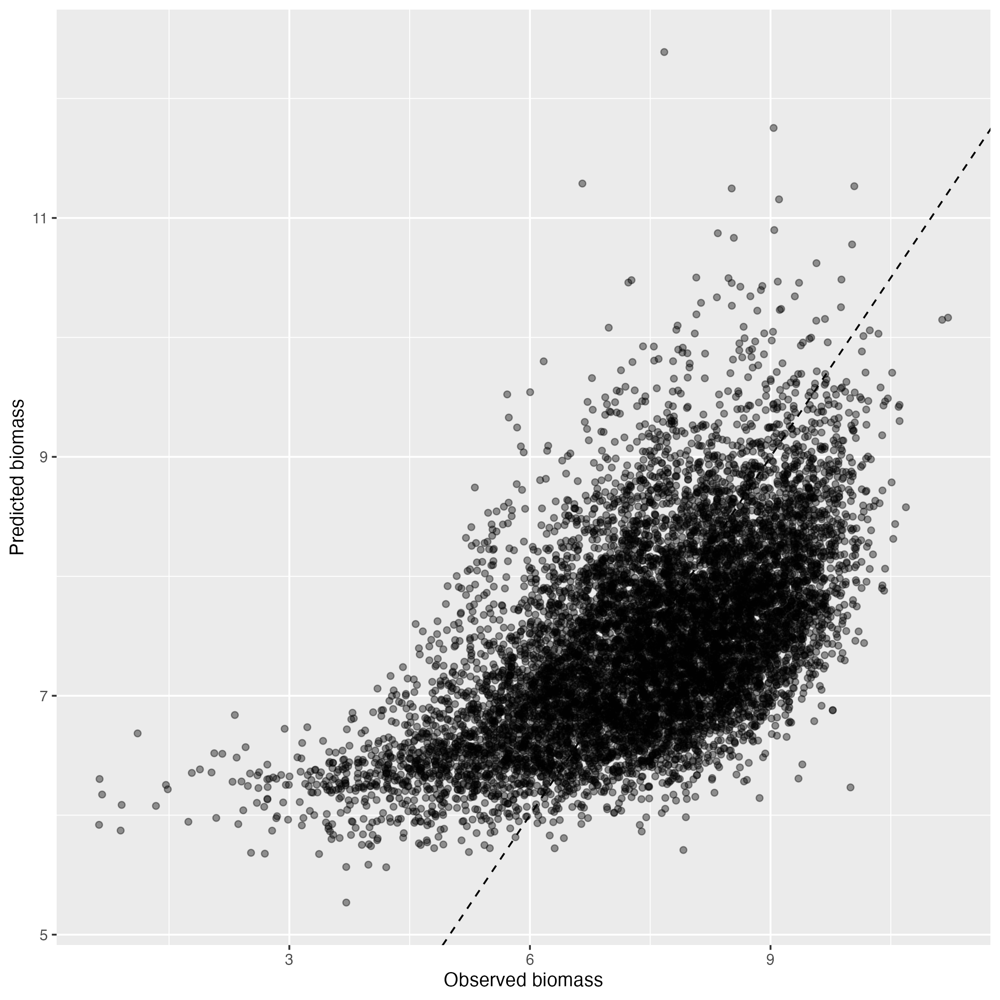

"..."


the European hornbeam is a medium-sized deciduous broadleaf tree of the birch family. It is native to France and widespread across the country, except in the Mediterranean zone and at high altitude. It is most frequent in the northern half, especially the Paris Basin, Lorraine, Alsace and the Centre region.
In forest management, hornbeam is mostly seen as an understory species. It has a low commercial value compared to oak or beech. Its wood is hard to work, so it is mainly used as firewood. Foresters often keep it for its role in shading the trunks of the main trees and protecting the soil, rather than for its timber.
The French National Forest Inventory is run by IGN. It monitors forest resources across mainland France, based on a systematic sampling grid of field plots that is renewed every year. On each plot, field teams record information on the stand and the environment, and measure the trees. The data are freely available as open data. In this study, we only use the plots where hornbeam is present. All other plots are excluded from the analysis.
"..."
